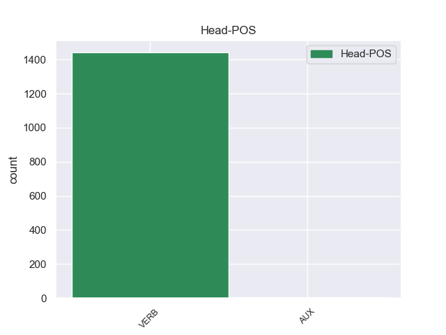
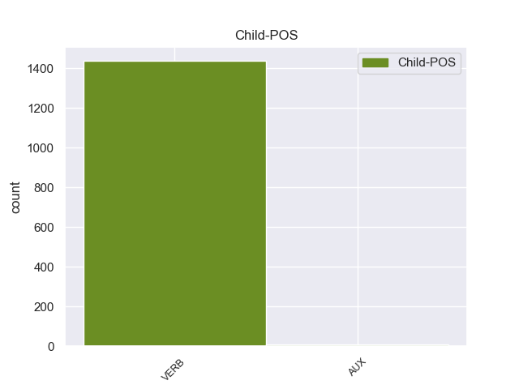

Distribution of features within this leaf



Agreement Rules sorted by frequency.
- When the dependent token is the conjunct(conj) of the head token, and the dependent token is VERB.
1 Quando _ _ _ _ 0 _ _ _
2 il _ _ _ _ 0 _ _ _
3 terremoto _ _ _ _ 0 _ _ _
4 è _ _ _ _ 0 _ _ _
5 forte _ _ _ _ 0 _ _ _
6 , _ _ _ _ 0 _ _ _
7 si _ _ _ _ 0 _ _ _
8 rovinano rovinare VERB V Mood=Ind|Number=Plur|Person=3|Tense=Pres|VerbForm=Fin 0 _ _ _
9 o _ _ _ _ 0 _ _ _
10 crollano crollare VERB V Mood=Ind|Number=Plur|Person=3|Tense=Pres|VerbForm=Fin 8 conj 8:conj:o _
11 anche _ _ _ _ 0 _ _ _
12 le _ _ _ _ 0 _ _ _
13 case _ _ _ _ 0 _ _ _
14 e _ _ _ _ 0 _ _ _
15 i _ _ _ _ 0 _ _ _
16 palazzi _ _ _ _ 0 _ _ _
17 . _ _ _ _ 0 _ _ _
1 Quando _ _ _ _ 0 _ _ _
2 c’ _ _ _ _ 0 _ _ _
3 è essere VERB V Mood=Ind|Number=Sing|Person=3|Tense=Pres|VerbForm=Fin 8 advcl 8:advcl _
4 il _ _ _ _ 0 _ _ _
5 terremoto _ _ _ _ 0 _ _ _
6 la _ _ _ _ 0 _ _ _
7 terra _ _ _ _ 0 _ _ _
8 trema tremare VERB V Mood=Ind|Number=Sing|Person=3|Tense=Pres|VerbForm=Fin 0 _ _ _
9 e _ _ _ _ 0 _ _ _
10 si _ _ _ _ 0 _ _ _
11 muove _ _ _ _ 0 _ _ _
12 . _ _ _ _ 0 _ _ _
1 Quando _ _ _ _ 0 _ _ _
2 tutti _ _ _ _ 0 _ _ _
3 i _ _ _ _ 0 _ _ _
4 cittadini _ _ _ _ 0 _ _ _
5 di _ _ _ _ 0 _ _ _
6 uno _ _ _ _ 0 _ _ _
7 Stato _ _ _ _ 0 _ _ _
8 , _ _ _ _ 0 _ _ _
9 uomini _ _ _ _ 0 _ _ _
10 e _ _ _ _ 0 _ _ _
11 donne _ _ _ _ 0 _ _ _
12 , _ _ _ _ 0 _ _ _
13 hanno _ _ _ _ 0 _ _ _
14 il _ _ _ _ 0 _ _ _
15 diritto _ _ _ _ 0 _ _ _
16 di _ _ _ _ 0 _ _ _
17 votare _ _ _ _ 0 _ _ _
18 si _ _ _ _ 0 _ _ _
19 dice dire VERB V Mood=Ind|Number=Sing|Person=3|Tense=Pres|VerbForm=Fin 0 _ _ _
20 che _ _ _ _ 0 _ _ _
21 in _ _ _ _ 0 _ _ _
22 quello _ _ _ _ 0 _ _ _
23 Stato _ _ _ _ 0 _ _ _
24 c’ _ _ _ _ 0 _ _ _
25 è essere VERB V Mood=Ind|Number=Sing|Person=3|Tense=Pres|VerbForm=Fin 19 ccomp 19:ccomp _
26 il _ _ _ _ 0 _ _ _
27 suffragio _ _ _ _ 0 _ _ _
28 universale _ _ _ _ 0 _ _ _
29 . _ _ _ _ 0 _ _ _
1 Durante _ _ _ _ 0 _ _ _
2 la _ _ _ _ 0 _ _ _
3 staffetta _ _ _ _ 0 _ _ _
4 , _ _ _ _ 0 _ _ _
5 i _ _ _ _ 0 _ _ _
6 nuotatori _ _ _ _ 0 _ _ _
7 fanno fare VERB V Mood=Ind|Number=Plur|Person=3|Tense=Pres|VerbForm=Fin 0 _ _ _
8 una _ _ _ _ 0 _ _ _
9 squadra _ _ _ _ 0 _ _ _
10 di _ _ _ _ 0 _ _ _
11 4 _ _ _ _ 0 _ _ _
12 persone _ _ _ _ 0 _ _ _
13 : _ _ _ _ 0 _ _ _
14 ogni _ _ _ _ 0 _ _ _
15 nuotatore _ _ _ _ 0 _ _ _
16 nuota nuotare VERB V Mood=Ind|Number=Sing|Person=3|Tense=Pres|VerbForm=Fin 7 parataxis 7:parataxis _
17 solo _ _ _ _ 0 _ _ _
18 per _ _ _ _ 0 _ _ _
19 una _ _ _ _ 0 _ _ _
20 parte _ _ _ _ 0 _ _ _
21 di _ _ _ _ 0 _ _ _
22 il _ _ _ _ 0 _ _ _
23 percorso _ _ _ _ 0 _ _ _
24 di _ _ _ _ 0 _ _ _
25 gara _ _ _ _ 0 _ _ _
26 . _ _ _ _ 0 _ _ _
1 Il _ _ _ _ 0 _ _ _
2 primo _ _ _ _ 0 _ _ _
3 disco _ _ _ _ 0 _ _ _
4 di _ _ _ _ 0 _ _ _
5 Norah _ _ _ _ 0 _ _ _
6 Jones _ _ _ _ 0 _ _ _
7 è _ _ _ _ 0 _ _ _
8 di _ _ _ _ 0 _ _ _
9 il _ _ _ _ 0 _ _ _
10 2002 _ _ _ _ 0 _ _ _
11 e _ _ _ _ 0 _ _ _
12 si _ _ _ _ 0 _ _ _
13 chiama _ _ _ _ 0 _ _ _
14 Come _ _ _ _ 0 _ _ _
15 away _ _ _ _ 0 _ _ _
16 with _ _ _ _ 0 _ _ _
17 me _ _ _ _ 0 _ _ _
18 che _ _ _ _ 0 _ _ _
19 significa significare VERB V Mood=Ind|Number=Sing|Person=3|Tense=Pres|VerbForm=Fin 0 _ _ _
20 “ _ _ _ _ 0 _ _ _
21 Vieni Vieni VERB V Mood=Ind|Number=Sing|Person=2|Tense=Pres|VerbForm=Fin 19 xcomp 19:xcomp _
22 via _ _ _ _ 0 _ _ _
23 con _ _ _ _ 0 _ _ _
24 me _ _ _ _ 0 _ _ _
25 ” _ _ _ _ 0 _ _ _
26 . _ _ _ _ 0 _ _ _
1 Se _ _ _ _ 0 _ _ _
2 taluno _ _ _ _ 0 _ _ _
3 ha _ _ _ _ 0 _ _ _
4 adoperato _ _ _ _ 0 _ _ _
5 una _ _ _ _ 0 _ _ _
6 materia _ _ _ _ 0 _ _ _
7 che _ _ _ _ 0 _ _ _
8 non _ _ _ _ 0 _ _ _
9 gli _ _ _ _ 0 _ _ _
10 apparteneva _ _ _ _ 0 _ _ _
11 per _ _ _ _ 0 _ _ _
12 formare _ _ _ _ 0 _ _ _
13 una _ _ _ _ 0 _ _ _
14 nuova _ _ _ _ 0 _ _ _
15 cosa _ _ _ _ 0 _ _ _
16 ( _ _ _ _ 0 _ _ _
17 1 _ _ _ _ 0 _ _ _
18 ) _ _ _ _ 0 _ _ _
19 , _ _ _ _ 0 _ _ _
20 possa potere AUX VM Mood=Sub|Number=Sing|Person=3|Tense=Pres|VerbForm=Fin 0 _ _ _
21 o _ _ _ _ 0 _ _ _
22 non _ _ _ _ 0 _ _ _
23 possa potere AUX VM Mood=Sub|Number=Sing|Person=3|Tense=Pres|VerbForm=Fin 20 conj 20:conj:o _
24 la _ _ _ _ 0 _ _ _
25 materia _ _ _ _ 0 _ _ _
26 riprendere _ _ _ _ 0 _ _ _
27 la _ _ _ _ 0 _ _ _
28 sua _ _ _ _ 0 _ _ _
29 prima _ _ _ _ 0 _ _ _
30 forma _ _ _ _ 0 _ _ _
31 , _ _ _ _ 0 _ _ _
32 ne _ _ _ _ 0 _ _ _
33 acquista _ _ _ _ 0 _ _ _
34 la _ _ _ _ 0 _ _ _
35 proprietà _ _ _ _ 0 _ _ _
36 pagando _ _ _ _ 0 _ _ _
37 a _ _ _ _ 0 _ _ _
38 il _ _ _ _ 0 _ _ _
39 proprietario _ _ _ _ 0 _ _ _
40 il _ _ _ _ 0 _ _ _
41 prezzo _ _ _ _ 0 _ _ _
42 di _ _ _ _ 0 _ _ _
43 la _ _ _ _ 0 _ _ _
44 materia _ _ _ _ 0 _ _ _
45 , _ _ _ _ 0 _ _ _
46 salvo _ _ _ _ 0 _ _ _
47 che _ _ _ _ 0 _ _ _
48 il _ _ _ _ 0 _ _ _
49 valore _ _ _ _ 0 _ _ _
50 di _ _ _ _ 0 _ _ _
51 la _ _ _ _ 0 _ _ _
52 materia _ _ _ _ 0 _ _ _
53 sorpassi _ _ _ _ 0 _ _ _
54 notevolmente _ _ _ _ 0 _ _ _
55 quello _ _ _ _ 0 _ _ _
56 di _ _ _ _ 0 _ _ _
57 la _ _ _ _ 0 _ _ _
58 mano _ _ _ _ 0 _ _ _
59 d' _ _ _ _ 0 _ _ _
60 opera _ _ _ _ 0 _ _ _
61 . _ _ _ _ 0 _ _ _
1 Occorre occorrere VERB V Mood=Ind|Number=Sing|Person=3|Tense=Pres|VerbForm=Fin 0 _ _ _
2 dunque _ _ _ _ 0 _ _ _
3 por porre VERB V Mood=Ind|Number=Sing|Person=1|Tense=Past|VerbForm=Fin 1 csubj 1:csubj _
4 si _ _ _ _ 0 _ _ _
5 una _ _ _ _ 0 _ _ _
6 questione _ _ _ _ 0 _ _ _
7 di _ _ _ _ 0 _ _ _
8 fondo _ _ _ _ 0 _ _ _
9 : _ _ _ _ 0 _ _ _
1 Le _ _ _ _ 0 _ _ _
2 donne _ _ _ _ 0 _ _ _
3 intervistate _ _ _ _ 0 _ _ _
4 , _ _ _ _ 0 _ _ _
5 distribuite _ _ _ _ 0 _ _ _
6 in _ _ _ _ 0 _ _ _
7 tutte _ _ _ _ 0 _ _ _
8 le _ _ _ _ 0 _ _ _
9 regioni _ _ _ _ 0 _ _ _
10 d' _ _ _ _ 0 _ _ _
11 Italia _ _ _ _ 0 _ _ _
12 e _ _ _ _ 0 _ _ _
13 appartenenti _ _ _ _ 0 _ _ _
14 a _ _ _ _ 0 _ _ _
15 ogni _ _ _ _ 0 _ _ _
16 strato _ _ _ _ 0 _ _ _
17 sociale _ _ _ _ 0 _ _ _
18 e _ _ _ _ 0 _ _ _
19 a _ _ _ _ 0 _ _ _
20 i _ _ _ _ 0 _ _ _
21 più _ _ _ _ 0 _ _ _
22 svariati _ _ _ _ 0 _ _ _
23 status _ _ _ _ 0 _ _ _
24 professionali _ _ _ _ 0 _ _ _
25 , _ _ _ _ 0 _ _ _
26 da _ _ _ _ 0 _ _ _
27 le _ _ _ _ 0 _ _ _
28 studentesse _ _ _ _ 0 _ _ _
29 a _ _ _ _ 0 _ _ _
30 le _ _ _ _ 0 _ _ _
31 contadine _ _ _ _ 0 _ _ _
32 , _ _ _ _ 0 _ _ _
33 da _ _ _ _ 0 _ _ _
34 la _ _ _ _ 0 _ _ _
35 manager _ _ _ _ 0 _ _ _
36 a _ _ _ _ 0 _ _ _
37 le _ _ _ _ 0 _ _ _
38 maestre _ _ _ _ 0 _ _ _
39 , _ _ _ _ 0 _ _ _
40 hanno _ _ _ _ 0 _ _ _
41 dichiarato _ _ _ _ 0 _ _ _
42 di _ _ _ _ 0 _ _ _
43 votare _ _ _ _ 0 _ _ _
44 per _ _ _ _ 0 _ _ _
45 le _ _ _ _ 0 _ _ _
46 donne _ _ _ _ 0 _ _ _
47 soltanto _ _ _ _ 0 _ _ _
48 in _ _ _ _ 0 _ _ _
49 il _ _ _ _ 0 _ _ _
50 15,7 _ _ _ _ 0 _ _ _
51 per _ _ _ _ 0 _ _ _
52 cento _ _ _ _ 0 _ _ _
53 di _ _ _ _ 0 _ _ _
54 i _ _ _ _ 0 _ _ _
55 casi _ _ _ _ 0 _ _ _
56 in _ _ _ _ 0 _ _ _
57 cui _ _ _ _ 0 _ _ _
58 esprimono esprimere VERB V Mood=Ind|Number=Plur|Person=3|Tense=Pres|VerbForm=Fin 0 _ _ _
59 preferenze _ _ _ _ 0 _ _ _
60 elettorali _ _ _ _ 0 _ _ _
61 personali _ _ _ _ 0 _ _ _
62 , _ _ _ _ 0 _ _ _
63 il _ _ _ _ 0 _ _ _
64 che _ _ _ _ 0 _ _ _
65 avviene avvenire VERB V Mood=Ind|Number=Sing|Person=3|Tense=Pres|VerbForm=Fin 58 acl:relcl 58:acl:relcl _
66 per _ _ _ _ 0 _ _ _
67 il _ _ _ _ 0 _ _ _
68 43,1 _ _ _ _ 0 _ _ _
69 per _ _ _ _ 0 _ _ _
70 cento _ _ _ _ 0 _ _ _
71 di _ _ _ _ 0 _ _ _
72 le _ _ _ _ 0 _ _ _
73 elettrici _ _ _ _ 0 _ _ _
74 ( _ _ _ _ 0 _ _ _
75 secondo _ _ _ _ 0 _ _ _
76 il _ _ _ _ 0 _ _ _
77 sondaggio _ _ _ _ 0 _ _ _
78 ) _ _ _ _ 0 _ _ _
79 . _ _ _ _ 0 _ _ _
1 Da _ _ _ _ 0 _ _ _
2 quale _ _ _ _ 0 _ _ _
3 musical _ _ _ _ 0 _ _ _
4 di _ _ _ _ 0 _ _ _
5 Broadway _ _ _ _ 0 _ _ _
6 è essere AUX VA Mood=Ind|Number=Sing|Person=3|Tense=Pres|VerbForm=Fin 7 aux 7:aux _
7 tratta trattare VERB V Mood=Ind|Number=Sing|Person=3|Tense=Pres|VerbForm=Fin 0 _ _ _
8 la _ _ _ _ 0 _ _ _
9 canzone _ _ _ _ 0 _ _ _
10 " _ _ _ _ 0 _ _ _
11 The _ _ _ _ 0 _ _ _
12 Story _ _ _ _ 0 _ _ _
13 is _ _ _ _ 0 _ _ _
14 me _ _ _ _ 0 _ _ _
15 " _ _ _ _ 0 _ _ _
16 ? _ _ _ _ 0 _ _ _
Disagree Examples:
1 " _ _ _ _ 0 _ _ _
2 Sembra sembrare VERB V Mood=Ind|Number=Sing|Person=3|Tense=Pres|VerbForm=Fin 0 _ _ _
3 quasi _ _ _ _ 0 _ _ _
4 che _ _ _ _ 0 _ _ _
5 Wojtyla _ _ _ _ 0 _ _ _
6 cerchi cercare VERB V Mood=Sub|Number=Sing|Person=3|Tense=Pres|VerbForm=Fin 2 ccomp 2:ccomp _
7 di _ _ _ _ 0 _ _ _
8 " _ _ _ _ 0 _ _ _
9 metter _ _ _ _ 0 _ _ _
10 si _ _ _ _ 0 _ _ _
11 in _ _ _ _ 0 _ _ _
12 linea _ _ _ _ 0 _ _ _
13 " _ _ _ _ 0 _ _ _
14 in _ _ _ _ 0 _ _ _
15 vista _ _ _ _ 0 _ _ _
16 di _ _ _ _ 0 _ _ _
17 la _ _ _ _ 0 _ _ _
18 conferenza _ _ _ _ 0 _ _ _
19 di _ _ _ _ 0 _ _ _
20 Pechino _ _ _ _ 0 _ _ _
21 , _ _ _ _ 0 _ _ _
22 afferma _ _ _ _ 0 _ _ _
23 , _ _ _ _ 0 _ _ _
24 e _ _ _ _ 0 _ _ _
25 dopo _ _ _ _ 0 _ _ _
26 esser _ _ _ _ 0 _ _ _
27 si _ _ _ _ 0 _ _ _
28 battuto _ _ _ _ 0 _ _ _
29 una _ _ _ _ 0 _ _ _
30 mano _ _ _ _ 0 _ _ _
31 su _ _ _ _ 0 _ _ _
32 la _ _ _ _ 0 _ _ _
33 fronte _ _ _ _ 0 _ _ _
34 si _ _ _ _ 0 _ _ _
35 ricordi _ _ _ _ 0 _ _ _
36 a _ _ _ _ 0 _ _ _
37 l' _ _ _ _ 0 _ _ _
38 improvviso _ _ _ _ 0 _ _ _
39 di _ _ _ _ 0 _ _ _
40 l' _ _ _ _ 0 _ _ _
41 esistenza _ _ _ _ 0 _ _ _
42 di _ _ _ _ 0 _ _ _
43 un _ _ _ _ 0 _ _ _
44 problema _ _ _ _ 0 _ _ _
45 " _ _ _ _ 0 _ _ _
46 . _ _ _ _ 0 _ _ _
1 Perché _ _ _ _ 0 _ _ _
2 , _ _ _ _ 0 _ _ _
3 diciamo dire VERB V Mood=Imp|Number=Plur|Person=1|Tense=Pres|VerbForm=Fin 13 parataxis 13:parataxis _
4 lo _ _ _ _ 0 _ _ _
5 , _ _ _ _ 0 _ _ _
6 in _ _ _ _ 0 _ _ _
7 confronto _ _ _ _ 0 _ _ _
8 a _ _ _ _ 0 _ _ _
9 la _ _ _ _ 0 _ _ _
10 Montessori _ _ _ _ 0 _ _ _
11 , _ _ _ _ 0 _ _ _
12 Pestalozzi _ _ _ _ 0 _ _ _
13 fa fare VERB V Mood=Ind|Number=Sing|Person=3|Tense=Pres|VerbForm=Fin 0 _ _ _
14 la _ _ _ _ 0 _ _ _
15 figura _ _ _ _ 0 _ _ _
16 di _ _ _ _ 0 _ _ _
17 un _ _ _ _ 0 _ _ _
18 gigante _ _ _ _ 0 _ _ _
19 " _ _ _ _ 0 _ _ _
20 . _ _ _ _ 0 _ _ _
1 È _ _ _ _ 0 _ _ _
2 difficile _ _ _ _ 0 _ _ _
3 che _ _ _ _ 0 _ _ _
4 la _ _ _ _ 0 _ _ _
5 gente _ _ _ _ 0 _ _ _
6 di _ _ _ _ 0 _ _ _
7 Srebrenica _ _ _ _ 0 _ _ _
8 o _ _ _ _ 0 _ _ _
9 di _ _ _ _ 0 _ _ _
10 Zepa _ _ _ _ 0 _ _ _
11 ( _ _ _ _ 0 _ _ _
12 quella _ _ _ _ 0 _ _ _
13 ancora _ _ _ _ 0 _ _ _
14 viva _ _ _ _ 0 _ _ _
15 ) _ _ _ _ 0 _ _ _
16 si _ _ _ _ 0 _ _ _
17 chieda chiedere VERB V Mood=Sub|Number=Sing|Person=3|Tense=Pres|VerbForm=Fin 0 _ _ _
18 in _ _ _ _ 0 _ _ _
19 queste _ _ _ _ 0 _ _ _
20 ore _ _ _ _ 0 _ _ _
21 se _ _ _ _ 0 _ _ _
22 Truman _ _ _ _ 0 _ _ _
23 fece fare VERB V Mood=Ind|Number=Sing|Person=3|Tense=Past|VerbForm=Fin 17 ccomp 17:ccomp _
24 bene _ _ _ _ 0 _ _ _
25 o _ _ _ _ 0 _ _ _
26 fece _ _ _ _ 0 _ _ _
27 male _ _ _ _ 0 _ _ _
28 a _ _ _ _ 0 _ _ _
29 sganciar _ _ _ _ 0 _ _ _
30 la _ _ _ _ 0 _ _ _
31 . _ _ _ _ 0 _ _ _
1 Questo _ _ _ _ 0 _ _ _
2 non _ _ _ _ 0 _ _ _
3 significa significare VERB V Mood=Ind|Number=Sing|Person=3|Tense=Pres|VerbForm=Fin 0 _ _ _
4 che _ _ _ _ 0 _ _ _
5 i _ _ _ _ 0 _ _ _
6 rischi _ _ _ _ 0 _ _ _
7 non _ _ _ _ 0 _ _ _
8 ci _ _ _ _ 0 _ _ _
9 siano essere VERB V Mood=Sub|Number=Plur|Person=3|Tense=Pres|VerbForm=Fin 3 ccomp 3:ccomp SpaceAfter=No
10 : _ _ _ _ 0 _ _ _
1 Romano _ _ _ _ 0 _ _ _
2 Prodi _ _ _ _ 0 _ _ _
3 vuole volere VERB V Mood=Ind|Number=Sing|Person=3|Tense=Pres|VerbForm=Fin 0 _ _ _
4 che _ _ _ _ 0 _ _ _
5 Dini _ _ _ _ 0 _ _ _
6 alzi alzare VERB V Mood=Sub|Number=Sing|Person=3|Tense=Pres|VerbForm=Fin 3 ccomp 3:ccomp _
7 il _ _ _ _ 0 _ _ _
8 tiro _ _ _ _ 0 _ _ _
9 di _ _ _ _ 0 _ _ _
10 la _ _ _ _ 0 _ _ _
11 sua _ _ _ _ 0 _ _ _
12 azione _ _ _ _ 0 _ _ _
13 con _ _ _ _ 0 _ _ _
14 " _ _ _ _ 0 _ _ _
15 un _ _ _ _ 0 _ _ _
16 forte _ _ _ _ 0 _ _ _
17 messaggio _ _ _ _ 0 _ _ _
18 di _ _ _ _ 0 _ _ _
19 lotta _ _ _ _ 0 _ _ _
20 a _ _ _ _ 0 _ _ _
21 l' _ _ _ _ 0 _ _ _
22 inflazione _ _ _ _ 0 _ _ _
23 " _ _ _ _ 0 _ _ _
24 . _ _ _ _ 0 _ _ _